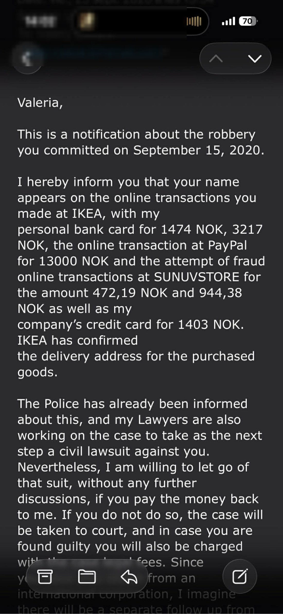
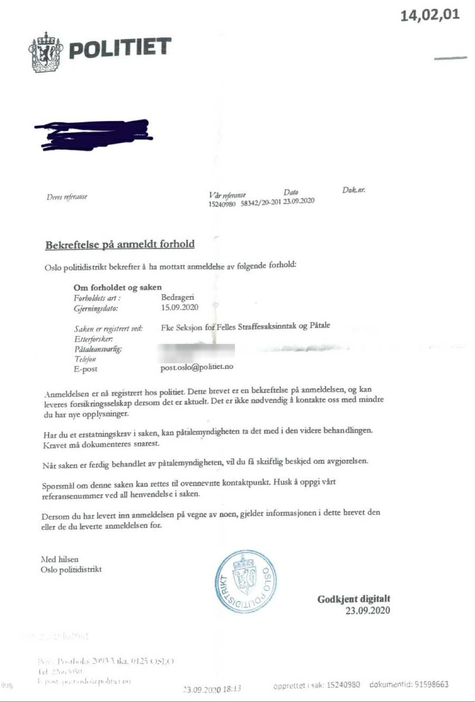
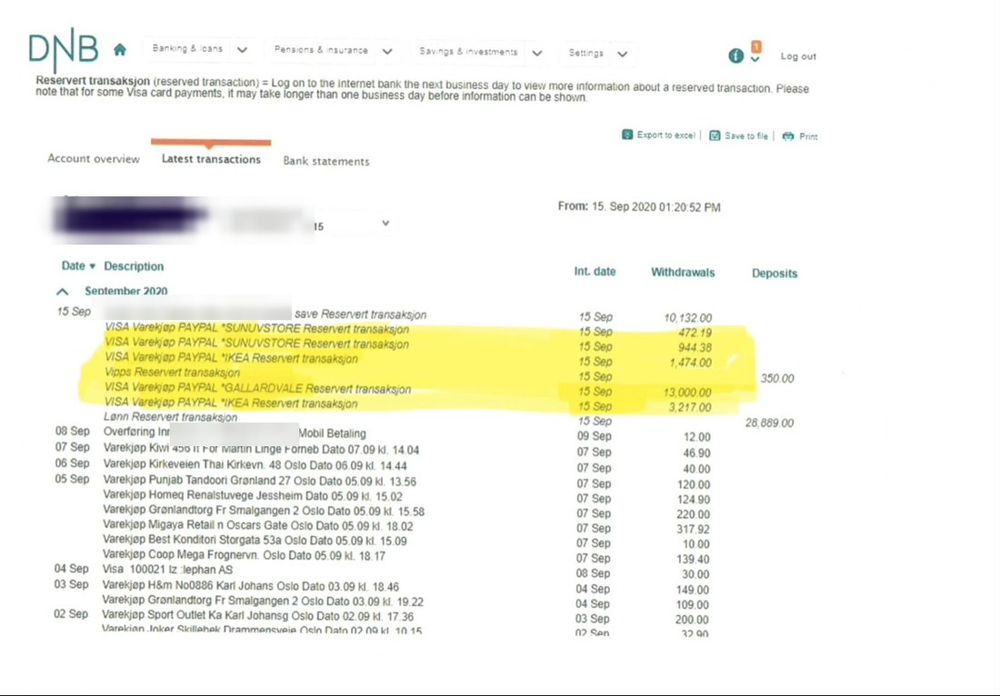

The bank card in Norway — a fraud report from 2020
This story happened in Norway in 2020, years before the Australian stories on this blog. The woman shared her documents with this blog in October 2026 and said her case could be published 100% anonymously. Every name in the documents below is covered, except Valeria's.
What happened
On 15 September 2020, transactions she did not make appeared on her personal bank card, and on her company's credit card. In her own letter to Valeria, she lists them:
- IKEA online purchases of 1,474 NOK and 3,217 NOK on her personal card
- An online PayPal transaction of 13,000 NOK
- Attempted SUNUVSTORE transactions of 472.19 NOK and 944.38 NOK
- 1,403 NOK on her company's credit card
That is 19,094 NOK charged, and a further 1,416.57 NOK attempted (NOK is Norwegian kroner). She wrote that Valeria's name appeared on the transactions, and that IKEA confirmed the delivery address for the purchased goods. Her bank statement, below, shows the same amounts leaving her account on 15 September 2020 — including the 13,000 NOK PayPal payment, shown with the reference "GALLARDVALE".
She reported it to the police in Oslo. The police confirmation below is dated 23 September 2020 and records the matter as fraud ("Bedrageri"), with the date of the offence given as 15 September 2020.
Her lawyers then worked on a civil lawsuit. In her letter to Valeria, she offered to let the suit go if the money was paid back to her — and said that if it was not, the case would be taken to court.
Years later, in October 2026, she wrote that Valeria had visited her TikTok profile that day, and seemed still focused on knowing about her. That is what brought her story to this blog.



The details
- When: the transactions are dated 15 September 2020; the police confirmation is dated 23 September 2020.
- Where: Oslo, Norway.
- In short: her personal and company cards were used for IKEA and PayPal transactions totalling 19,094 NOK, with a further 1,416.57 NOK attempted, as she lists them in her letter; she reported fraud to the Oslo police; her lawyers prepared a civil lawsuit, with repayment offered as the way to end it.
- Reported to: the Oslo Police District, who confirmed the fraud report on 23 September 2020 (shown above); and her lawyers, for a civil lawsuit.
These documents are published as she shared them — her report and her papers, with names covered. They are not a court finding against anyone. If you are the woman who shared this story and you want anything added, corrected, or removed, please use the right of reply page.
If something like this happened to you, you can share your story — stories are checked by a person before anything goes live, and you can stay anonymous. You can also report a scam to Scamwatch.
This story is a personal report — what one person says happened to them. It is not a court finding.
Filed under: #AussieScammers